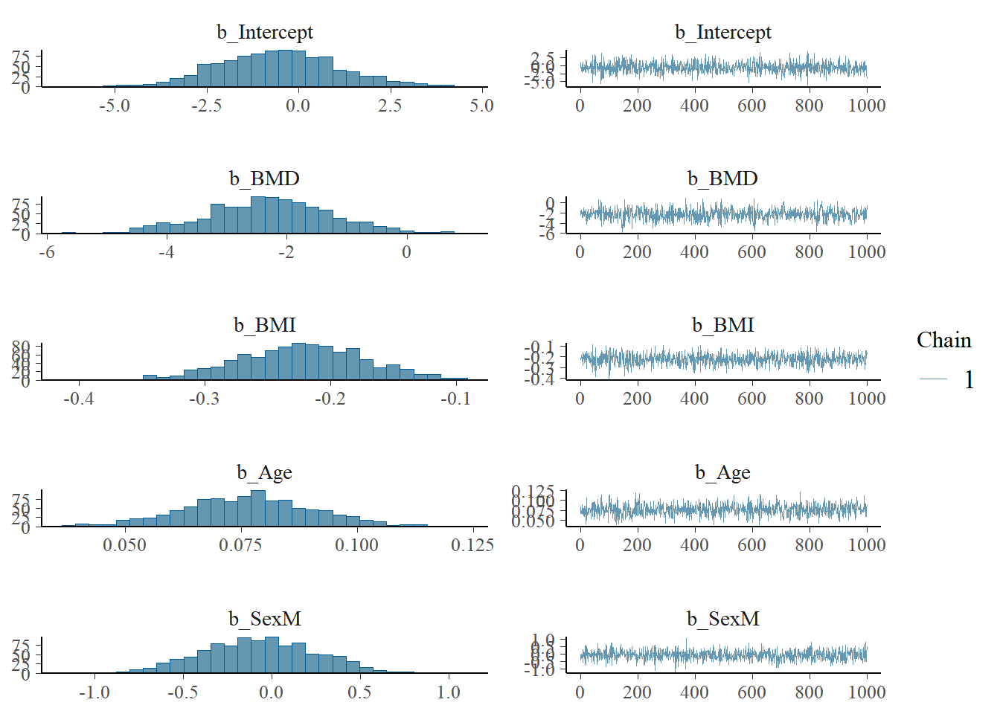

– LO1: Explain the difference between Bayesian and frequentist concepts of statistical inference.
– LO5: Engage in specifying, checking and interpreting Bayesian statistical analyses in practical problems using effective communication with health and medical investigators.
Objectives
By the end of this week you should be able to:
– Understand non-Gaussian Bayesian model with binary outcome
– Understand the difference between Bayesian and classical models.
– Formulate problems and solutions.
7.2 Binary Outcome
Binary variable seem simple at first—they’re just yes or no, 1 or 0, success or failure. But there’s often more going on behind the scenes, especially when the outcome depends on other factors. For example, how likely is a patient to get better depending on their treatment and medical history?
To study these kinds of questions, we use regression models for binary data. These models help us understand how different factors affect the chances of a certain outcome. Two common types of models for this are logistic regression and probit regression. In a Bayesian approach, we can not only see how the predictors influence the outcome, but also include what we already believe before seeing the data—and clearly measure how uncertain our results are.
Let us now explain this more using the bone mineral density (BMD) example. Our research aim is now to understand the effect of BMD on the fracture status of the bone (‘Status’), where we assume no-fracture refers to zero (reference category) and fracture refers to one.
Let’s start by explaining the example using a DAG. In our research, we’re trying to understand how Bone Mineral Density (BMD) total (\(g/cm^2\)) measure in spine affects whether a bone breaks or not. We group fracture status into two categories: no fracture (0) and fracture (1).
In this case, BMD total in spine is our main variable of interest, this is the exposure variable, because we want to see how changes in BMD are linked to the risk of fractures. At the same time, we also look at Body Mass Index (BMI), Age, and Sex. These are the confounders, which means they can influence both BMD and the risk of having a fracture. If we don’t take them into account, we might get the wrong idea about how strongly BMD is related to fractures.
So, we’re using this setup to better understand how all these factors: BMD, BMI, age, and sex, work together and affect whether someone has a bone fracture or not. Each factor follows a certain pattern, and by studying these patterns, we can make better predictions about bone health.
Here, we’re modeling how BMD affects the probability of a bone fracture, while adjusting for the confounding effects of BMI, Age, and Sex. Let’s build a Bayesian hierarchical model:
Let, \(\text{Status}_i \in \{0,1\}\): fracture status for individual \(i\), i.e, 0 = no fracture and 1 = fracture. Using \(\text{BMD}_i\), \(\text{BMI}_i\), \(\text{Age}_i\), and _i$, we write the probability of fracture \(P(\text{Status}_i = 1 \mid \cdot)\) as:
Hence, denoting \(\mathbf{y}_i = \text{Status}_i\) and \(\bf{x}_i =(\text{BMD}_i, \text{BMI}_i, \text{Age}_i, \text{Sex}_i)'\), we write the posterior distribution in matrix and vector notations as:
This model lets us estimate the posterior distribution of the effect of BMD on fractures, while adjusting for BMI, Age, and Sex.
7.4 R Code Example:
Consideration of a non-informative prior for logistic regression can yiled a wide range or variability for the odds ratio. For example, a \(N(0,10^{2})\) will provide a standard deviation in the odds ratio scale as \(\exp(100)\), which is a very large number, and consideration of such large number can cause issues with identifiability and numerical stability, as the link function of the logistic regression can explode with large coefficients.
Whereas, weakly informative priors balance flexibility and regularisation for the logistic regression scenario. They prevent extreme parameter estimates, improve convergence, and produce more realistic predictions.
Hence, using a weakly informative prior distribution we obtain the posterior estimates of the model parameters as below. Here, we use \(\beta_{(.)} \sim N(0, 4)\) to define the weakly informative prior for the log-odds ratio. Thus, we get in odds ratio scale the prior range for any of the model coeficients (i.e., parameters) with hyper-parameter standard deviation as: \(\exp(4)\approx 55\). Note that, we do not have any variance parameter for this model.
Family: bernoulli
Links: mu = logit
Formula: Status ~ BMD + BMI + Age + Sex
Data: bmd_data (Number of observations: 1077)
Draws: 1 chains, each with iter = 2000; warmup = 1000; thin = 1;
total post-warmup draws = 1000
Regression Coefficients:
Estimate Est.Error l-95% CI u-95% CI Rhat Bulk_ESS Tail_ESS
Intercept -0.55 1.66 -3.61 2.81 1.00 1291 583
BMD -2.30 1.05 -4.35 -0.27 1.01 686 478
BMI -0.22 0.05 -0.32 -0.13 1.00 947 653
Age 0.08 0.01 0.05 0.10 1.00 755 655
SexM -0.07 0.32 -0.68 0.53 1.00 852 706
Draws were sampled using sampling(NUTS). For each parameter, Bulk_ESS
and Tail_ESS are effective sample size measures, and Rhat is the potential
scale reduction factor on split chains (at convergence, Rhat = 1).
Code
plot(fracture_model)

Note that by deafult the ‘brm’ model output provides mean estimates for the model parameters. To get the summary statistics in odds ratios, we need to follow the R code below:
Code
#posterior_summary <- posterior_summary(fracture_model)#odds_ratios <- exp(posterior_summary[grep("^b_", rownames(posterior_summary)), ])library(bayesplot)posterior <-as_draws_df(fracture_model)posterior_or <- posterior %>% dplyr::select(starts_with("b_")) %>% dplyr::mutate(across(everything(), exp))# drop intercept from the estimate#posterior_or <- posterior_or[,-1]#mcmc_areas(# posterior_or,# pars = colnames(posterior_or),# prob = 0.95 # 95% credible interval#) +# ggplot2::labs(title = "Posterior Distributions of Odds Ratios")mcmc_trace( posterior_or,pars =c("b_BMD","b_BMI", "b_Age", "b_SexM")) + ggplot2::labs(title ="Posterior Trace Plots of Odds Ratios")